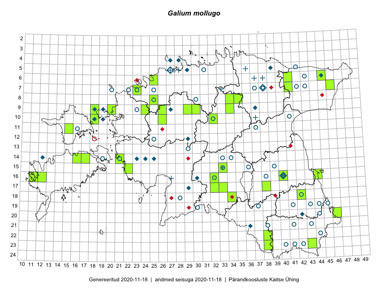

Galium mollugo
Uuendatud: 2016-12-02
Kaardile koondatud taksonid: Galium mollugo L.

Kaart põhineb 33 kirjel, neist vaatlusi 27 ja eksemplare 6. Taksonit on leitud 27 ruudust.
Kuvatud viited 20 esimesele andmebaasikirjele, ülejäänud PlutoFis
- Toomas Kukk: 2015-06-19: 06-27: ala
- Tiit Hallikma, Toomas Kukk: 2015-07-23: 07-41: ala
- Meeli Mesipuu: 2015-07-10: 14-16: ala
- Meeli Mesipuu: 2015-07-10: 14-16: GPS punkt
- Jana-Maria Habicht, Ester Valdvee: 2015-07-31: 08-34: ala
- Jana-Maria Habicht, Ester Valdvee, Kirke Pilvik: 2015-07-14: 08-35: ala
- Jana-Maria Habicht, Ester Valdvee, Kirke Pilvik: 2015-07-25: 09-34: ala
- Maria Abakumova: 2015-07-23: 15-33: ala
- Maria Abakumova, Helle Mäemets: 2015-07-30: 15-34: ala
- Maria Abakumova: 2015-07-07: 16-32: ala
- Eeva-Maria Jeletsky, Tarmo Niitla: 2015-07-15: 23-38: ala
- Oliver Parrest: 2015-07-01: 19-13: ala
- Maria Abakumova, Tiit Hallikma: 2015-07-09: 17-32: ala
- Maria Abakumova: 2015-07-21: 17-33: ala
- Maria Abakumova: 2015-07-24: 18-34: ala
- Mari Reitalu, Sirje Azarov, Oliver Parrest: 2015-08-02: 18-12: ala
- Mari Reitalu, Oliver Parrest: 2015-07-24: 15-13: ala
- Mari Reitalu: 2015-07-08: 16-12: ala
- Karin Kikas, Elle Rajandu: 2015-06-01: 09-38: ala
- Marju Erit: 2015-08-01: 08-20: ala